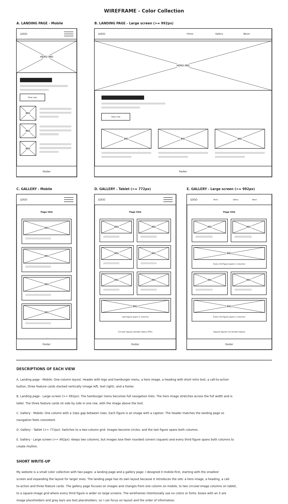

Wireframe - Color Collection

Short write-up
My website is a small color collection with two pages: a landing page and a gallery page. I designed it mobile-first, starting with the smallest screen and expanding the layout for larger ones.
The landing page has its own layout because it introduces the site: a hero image, a heading, a call-to-action button and three feature cards. On large screens the menu expands into links and the cards sit in one row.
The gallery page focuses on images. It changes from one column on mobile, to two columns with circular images on tablet, to a square-image grid on large screens where every third figure spans both columns.
The wireframes intentionally use no colors or fonts. Boxes with an X are image placeholders and gray bars are text placeholders, so I can focus on layout and the order of information.